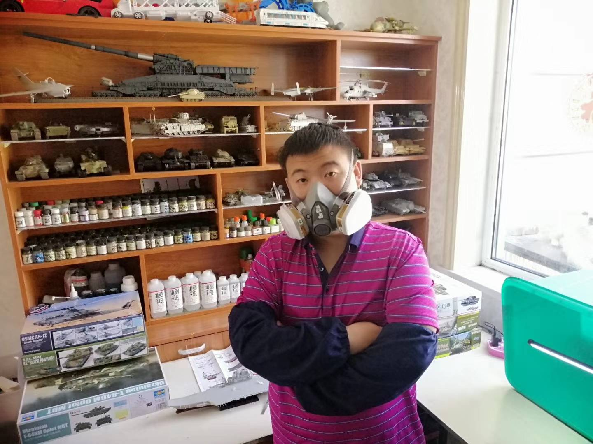
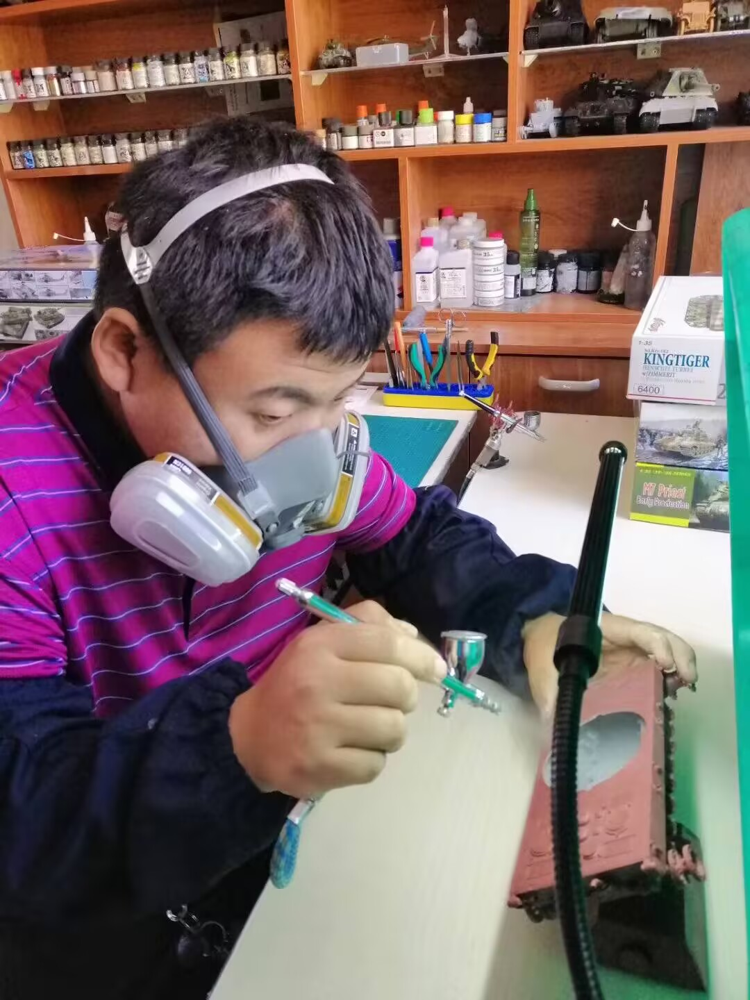
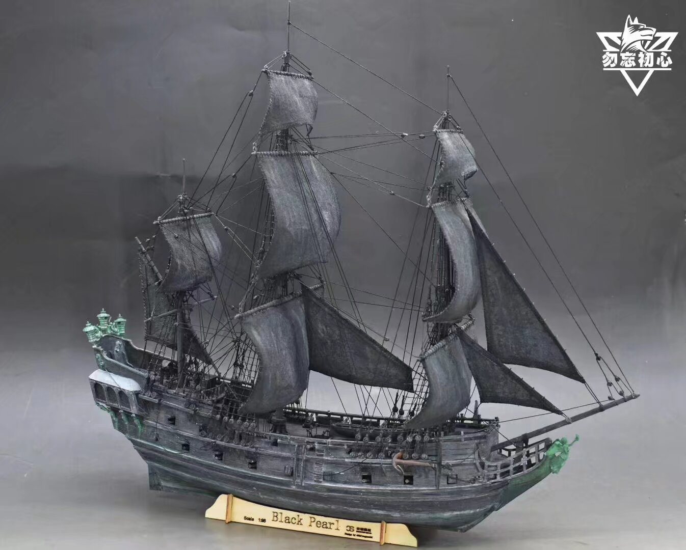
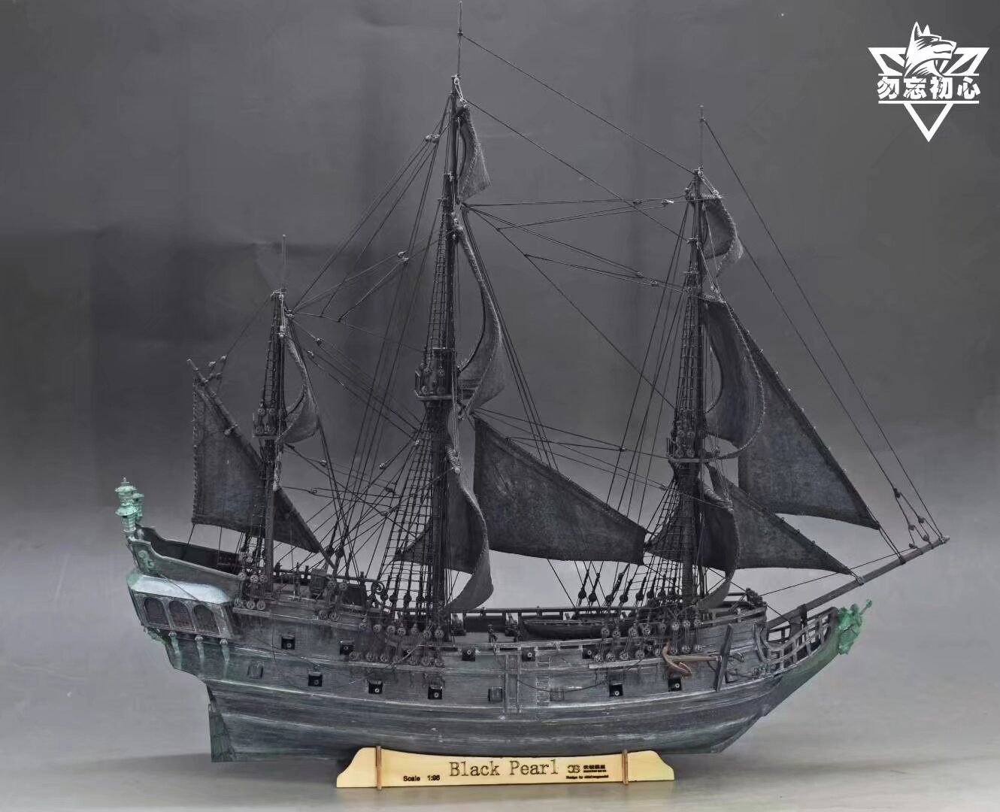
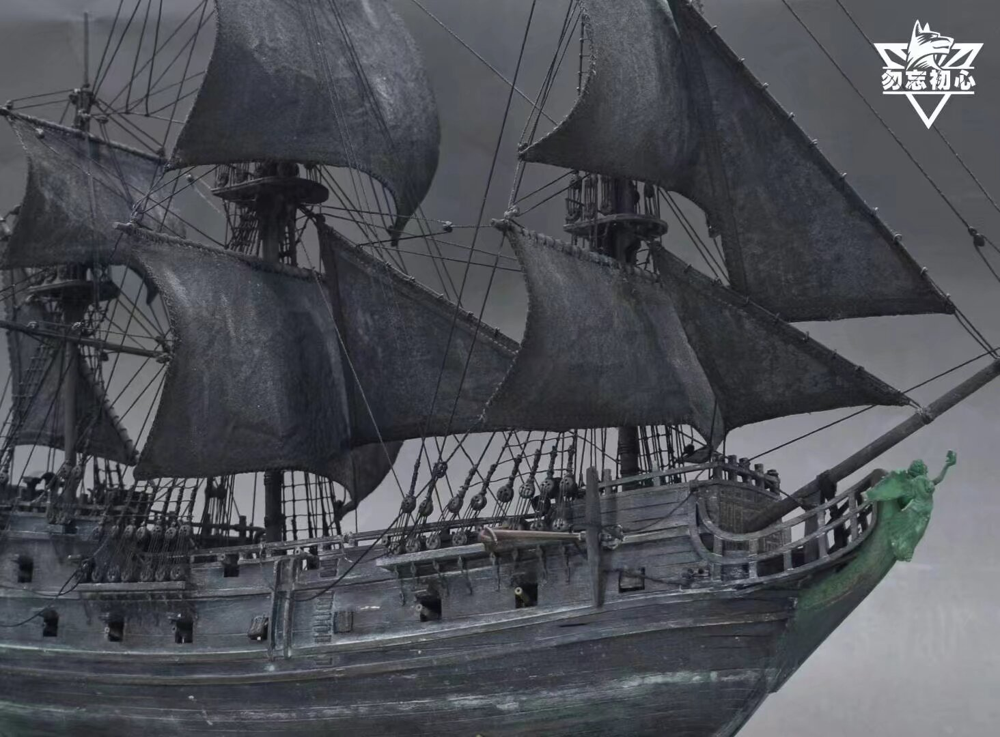
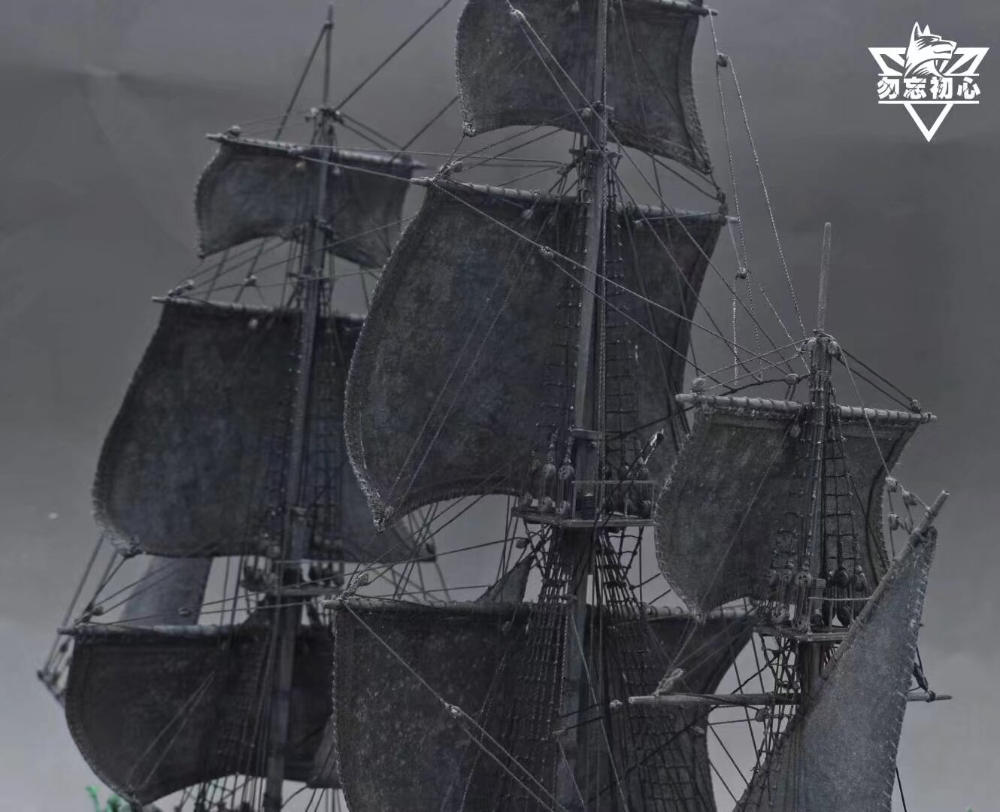
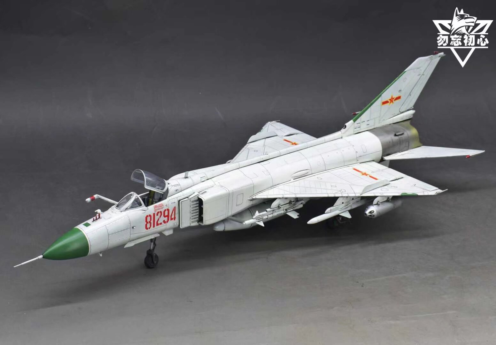
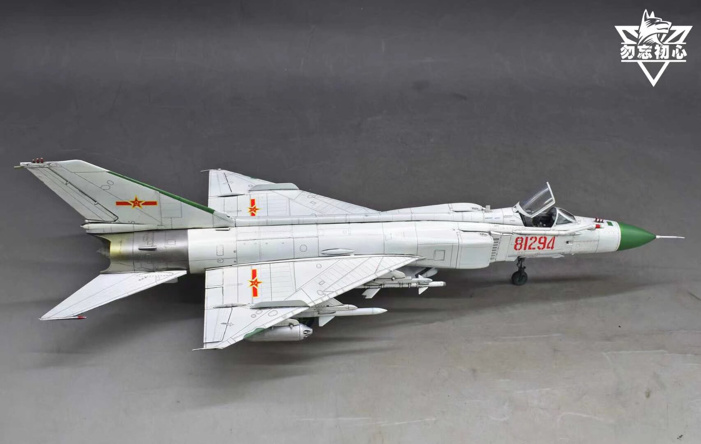
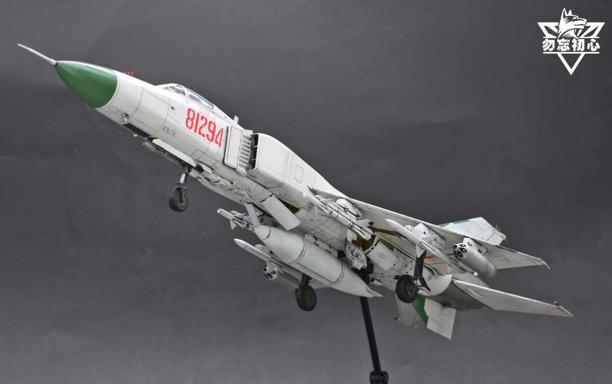
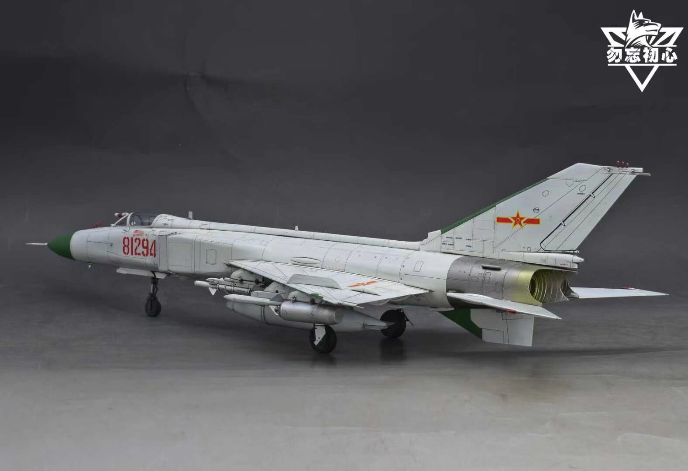

勿忘初心模型工房は、中国吉林省長春市にある模型制作代行スタジオです。 豊富な制作代行の経験を持ち、塗装や装備に関する資料の検証にも細心の注意を払っています。 戦車・自動車・航空機・艦船・ガンダム・ウォーハンマー40Kなど、 さまざまなブランドの模型制作を手がけています。
職人紹介
王小佳（ワン・シャオジア）は中国東北部出身の石油労働者であり、 10年以上にわたって模型制作代行を続けてきたベテランです。 現在は専用のプロフェッショナルな工房を構え、中国北方地域の模型愛好者向けSNSフォーラムでもよく知られた存在です。 中国国内各地のみならず、アメリカやイランなど海外の模型愛好者からの依頼も数多く受けており、 その実績は国際的です。模型の組み立てや塗装はもちろん、 木工技術にも精通しており、依頼者からは高い評価を得ています。

王さんは新たに模型制作を始めた初心者に対しても積極的に指導を行っており、 並外れた忍耐力と責任感を持ち合わせています。 自身の工房に学びたい人を招いたり、学習者が撮影した問題点の動画を丁寧に分析して解決策を提案するなど、 親身なサポートを惜しみません。 これらすべての指導は無償で行われており、王さんのもとで学んだ多くの初心者たちは、 最終的に自力で模型制作の課題を乗り越えることができています。 こうした姿勢こそが、王さんが多くの人々から支持されている大きな理由のひとつです。

最新作
ブラック・パール号（1：125）木工製品 販売価格：100万円（税別）




戦闘機 J-8IIF（1:48）トランペッターキット 販売価格：45,000円（税別）



